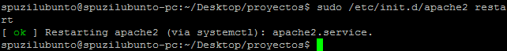

Índice
- Instalación
Apache en Linux
Instalación
- Actualizar los repositorios: sudo apt-get update
- Instalar Apache: sudo apt-get install apache2
Parar servidor
sudo /etc/init.d/apache2 stop
Reiniciar servidor
sudo /etc/init.d/apache2 restart

¿Dónde está la web que muestra aapache?
Vamos a /var/www y podremos ver una carpeta llamada "html". Dentro de esta carpeta tendremos nuestro "index.html"-